第二节 揭秘 Aurora 底层存储
1、快速回顾： 数据库内部结构
1-1 数据库B+树
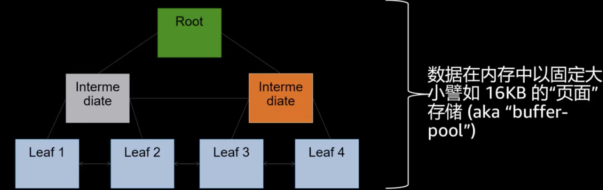
- 数据库B+树，根节点， 中间点， 叶子节点，数据放在叶子节点
- 数据在内存中以固定大小譬如16KB的“页面” 存储（aka "buffer-pool")
- 内存的数据从成本的考虑和高可用的考虑不会长久的存放，数据会被定期写入持久的存储中去（checkpoint)
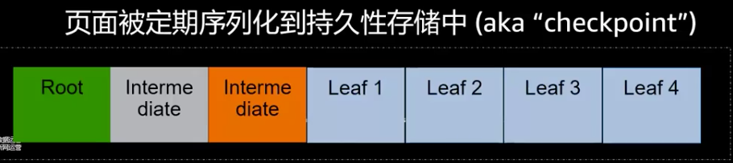
1-2 快速回顾：DO-REDO-UNDO协议
- 数据在buffer-pool中通过Do/REDO/UNDO操作在“原位‘’修改
- 包含前像/后像的日志记录被存储到
write-ahead Log (WAL)
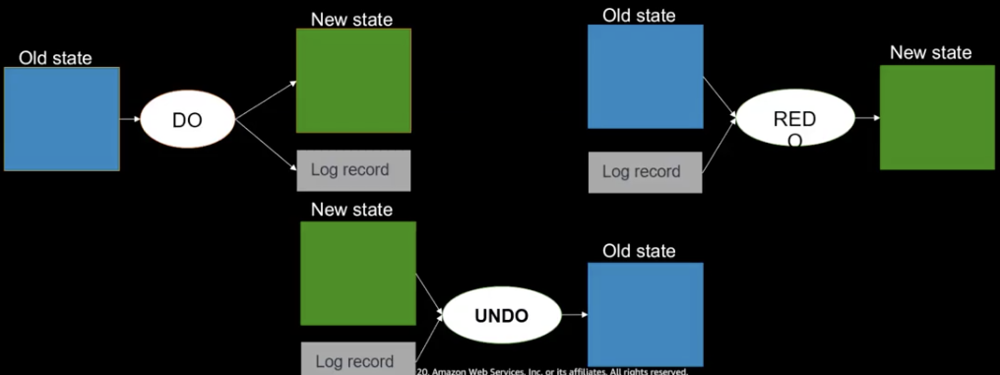
- REDO: 重放操作，包含前像/后像，变更的东西
- UNDO：反过来，变更错了，回滚操作
1-3 快速回顾：崩溃恢复
- 事务1： 提交做了checkpoint, 日志有，数据脏块落盘
- 事务2，事务3写了REDO，没有做checkpoint
- 事务4没做完，系统崩溃了
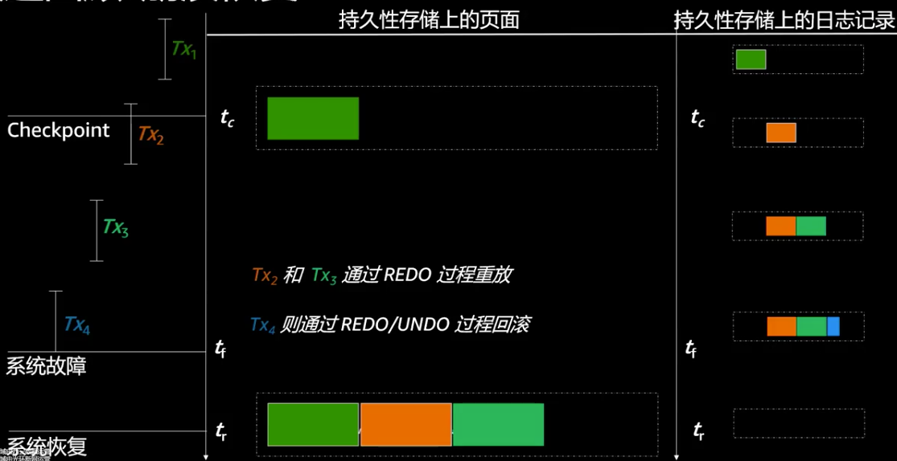
- REDO LOG重放，从checkpoint 重放, 事务1不用重放
- 事务2，事务3通过REDO重放
- 事务4没有提交，所以要通过UNDO回滚
1-4 快速回顾：持久化所需的IO
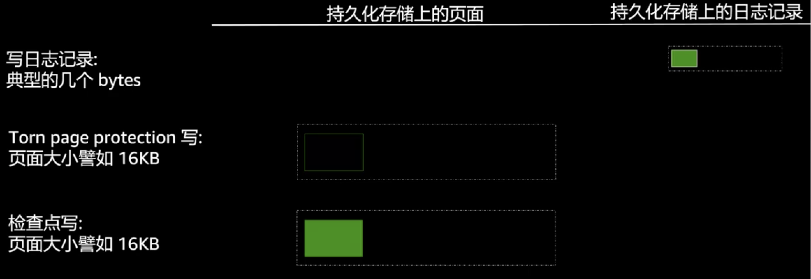
- 用户数据变化的大远远小于I/O大小（32KB+)
- 数据库的一切都与I/O相关
传统的数据库不是每个checkpoint都去写，效率太低了，隔一段时间写一下，多个事务并发劲量合并的
传统数据库的目的就是减少IO
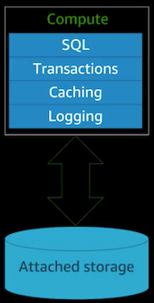
- 缓存/查询优化/ 硬件方面提高IO带宽
2、原生数据库的架构
2-1 Amazon Aurora的方式日志即数据库
从数据库创建开始的日志流
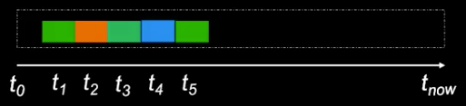
- 任何版本的数据库页面都可以通过日志流构造
- 绿色页面 t5 可以通过 t1 到 t5 的日志来生成
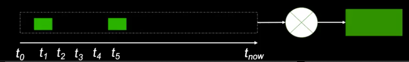
2-2 Amazon Aurora的方式：将险查点工作下放到存储层
问题1:
仅仅依靠日志流来应付读取页面不实际（太慢） ，
建库刚开始可以，构建两年后的数据库的REDO log不现实
解决办法：
使用定期检查点
问题2:
检查点任务是数据库的重大负荷，感觉和传统没有区别
解决办法：
- 使用分布式存储做持续的检查点
- 上千个节点在周期性，异步的做checkpoint
2-3 Amazon Aurora的方式：计算与存储分离
计算与存储有不同的生命周期
计算实例
- 损坏后被替换
- 停机节省费用
- 基于负载扩展、收缩
存储，从另一个角度来说，是长期的
为可伸缩性、可用性和持久性解藕计算和存储
2-4 Amazon Aurora使用面向服务的体系结构
专门构建一个多租户，多附加的专门为数据库打造的日志结构分 布式存储系统
多租户
不是为每一个数据库用户就构建一个存储节点
多附加
集群中的写节点读节点，其实是share disk,存储结构要同时挂到这些节点上
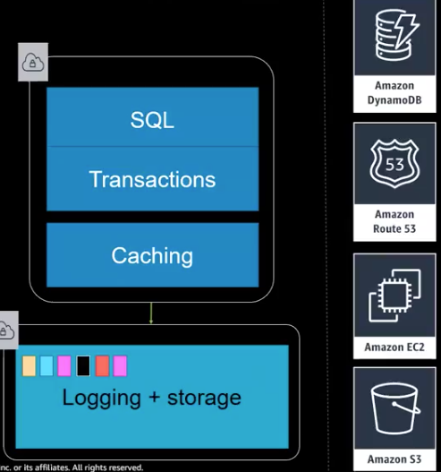
利用AWS 现有服务
- DynamoDB(Key-Value): 存储原数据metadata, exp, 存储节点的数据分部，软件的情况
- Route53: DNS的变化
- EC2
- S3 备份
2-5 Amazon Aurora 存储节点I/O流

- （写入日志发到存储节点）接收日志记录放入内存队列并持久化
- 同时写入6个，4个成功及表现为成功
- 通知数据库
- 组织日志并确认间隙 (写入的日志被组织，并查看是否有间隙)
- 通过Gossip到peers补足间隙
- 通过gossip 到其他peer节点把日志拉出来，补足间隙
- 合并日志记录形成新的页面
- 补足间隙后，旧页面和日志合成新的页面定期
- 定期将日志和合并后的page放到s3 （被以后的查询，恢复利用）
- 定期垃圾回收，清理旧页面 （当主节点和只读节点都不在需要，被回收）
- 定期检查页面一致性 （checksum) 如果缺失，去其他节点去要
注意：
- 所有步骤都是异步的 （除了1，2步）
- 只有第一步和第二步会造成前端延迟
3、大规模的持久性
3-1 Aurora可以容忍AZ+1故障
-
复制6份，每个AZ有2份
- 形成quorum，要求6写4成功
-
如果面临AZ故障？
- 依然可以保证4/6拷贝
- 保持可写
-
如果面临AZ+1故障呢？
- 依然有3份拷贝
- 不会有数据丢失
- 通过幸存的3拷贝恢复损坏的拷贝
- 恢复写能的力
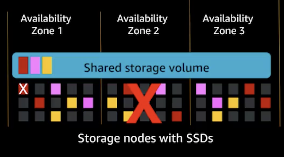
3-2 Amazon Aurora使用段存储
-
将数据分成n个固定大小的段
- 在一个protection group (PG）中对每个段复制6份
-
在故障率以及修复时间之间平衡
- 如果段太小，故障率过高
- 如果段太大，则修复时间过长
-
选择在保证“足够快”修复的前提下的最大大小 ．
- 我们现在段大小是是10GB，因为我们可以在1分钟以内修复一个10G的段
3-3 快速和可逆的成语变化
- 使用 quorum sets 与epochs 来
- 通过epoch实现快速更改
- 在成员变化时创建额外的的quorums
- 用多个quorum来快速逆转更改
- F 可疑： 网络的堵塞
- 两个Epoch都可以满足4/6写入成功
- 新的quorum起来以后，从其他节点拷贝数据
- 确实有问题，更新epochs，保证只写入quorum G就好了
一边修复一边观察
4、性能
4-1 Amazon Aurora I/O概况
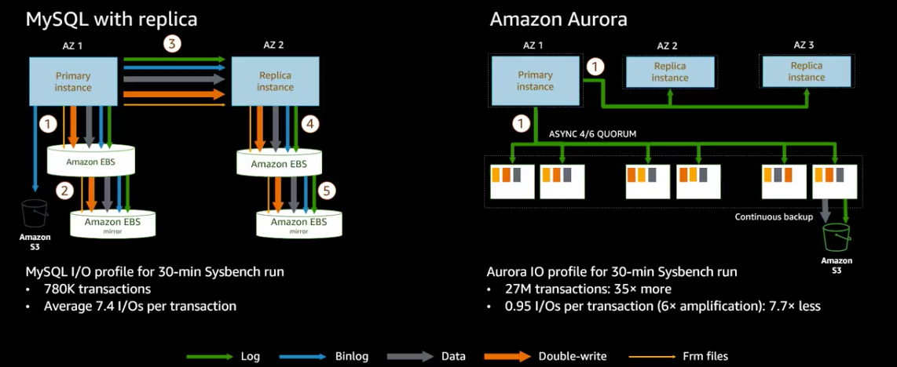
5、全局数据库
5-1 全局物理复制
传统的数据库复制都是通过binlog,延迟比较长
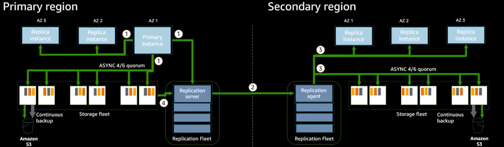
- 主实例将日志记录用于发送倒存储节点，只读实例和复制服务器
- 复制服务器将日志流发送到secondary region 的复制代理
- 复制服务器将日志并行发送给存储节点和只读副本
-
复制服务器可以从存储节点拉日志记录以弥补故障造成的间隙
-
高吞吐： 150K writes/second的负载，复制对性能的影响也是微乎其微
- 低复制延迟：高负载下依然保持次秒级跨区域复制延迟
- 快速恢复：区域故障后1分钟以内即可承担全面读写
5-2 全局复制性能
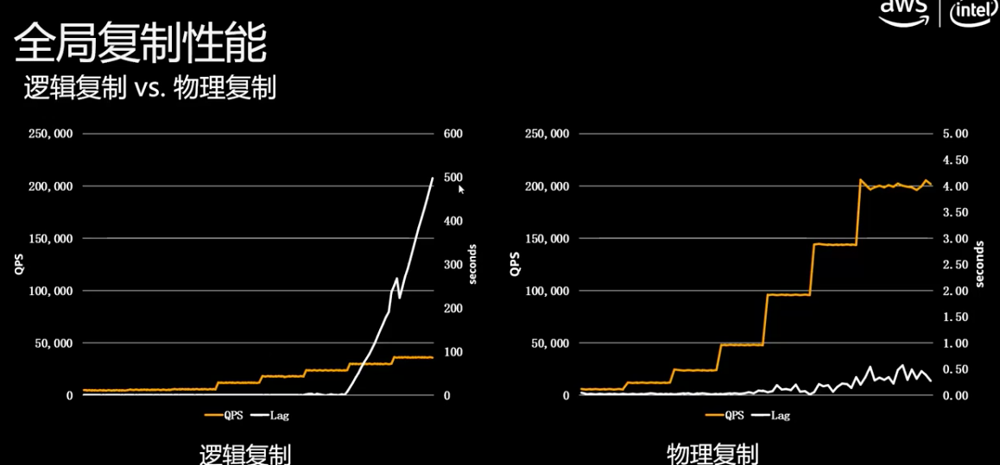
QPS对LAG的影响
6、快速数据库克隆
6-1 Aurora数据库克隆技术
克隆数据库而不复制数据 => 可以很快创建一个clone
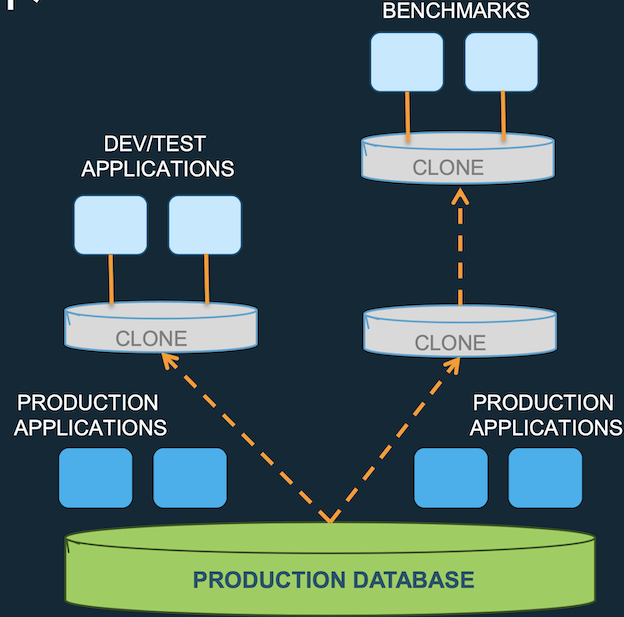
- 瞬间创建一个数据库克隆
- 快的原因是并不会拷贝原数据库中的数据吗，而只是很快速的生成指针
- 克隆数据库并不包含数据，而是包含一堆指针。当用户访问原数据库是是通过指针去访问原数据库中的数据
- 当源数据库发生改变时，源数据里的数据保留不变，被修改的数据块拷贝一份出来，在拷贝出来的数据快做修改
- 对于克隆数据来说，始终可以看到创建克隆数据库时源数据快中的内容 比如9点创建的克隆，可以看到静态的九点钟创建的克隆的内容
- 源库的变化不会影响源数据文件，是会拷贝一个新的数据块
- 对克隆库修改时，也是对源数据进行拷贝，进行修改
- 仅在发生写入时复制数据(COW) – 当原始数据和克隆卷数据不同时
应用场景
- 克隆生产数据库以运行测试
- 数据库重组
- 为分析提供一个时间点快照，不影响生产环境，可以产生一个用于分析的静态内容
6-2 数据库克隆：怎么工作的？
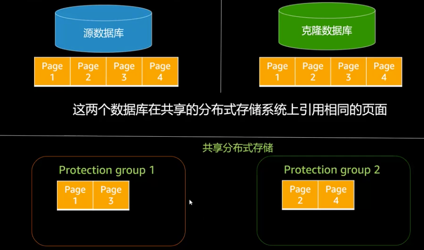
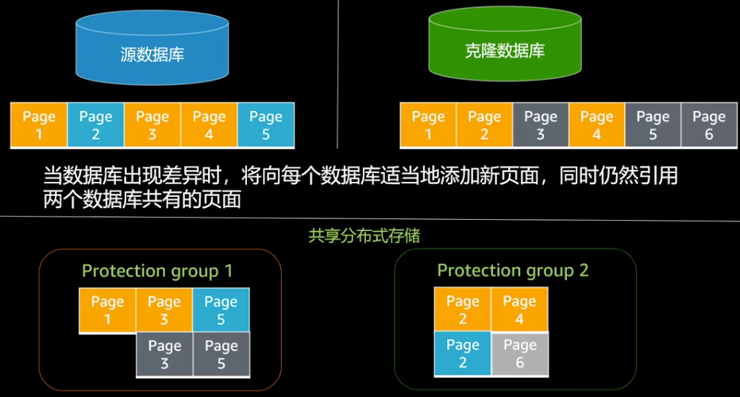
完全不需要深度复制
- 速度快
- 节省空间和成本